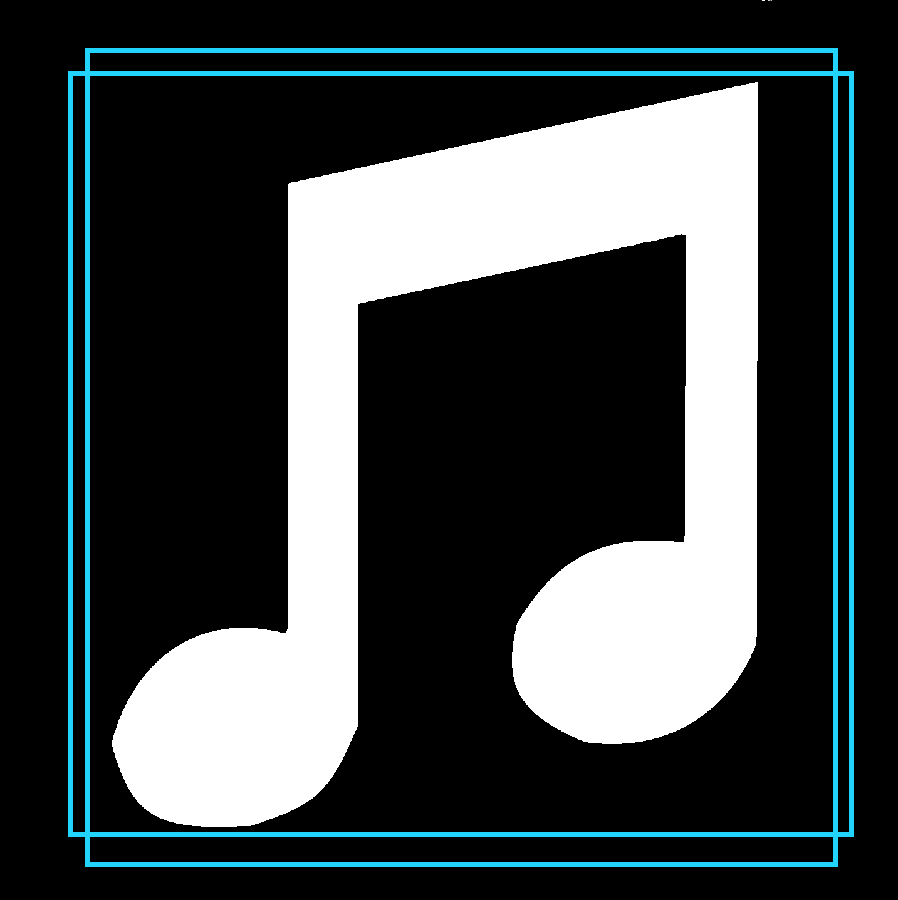
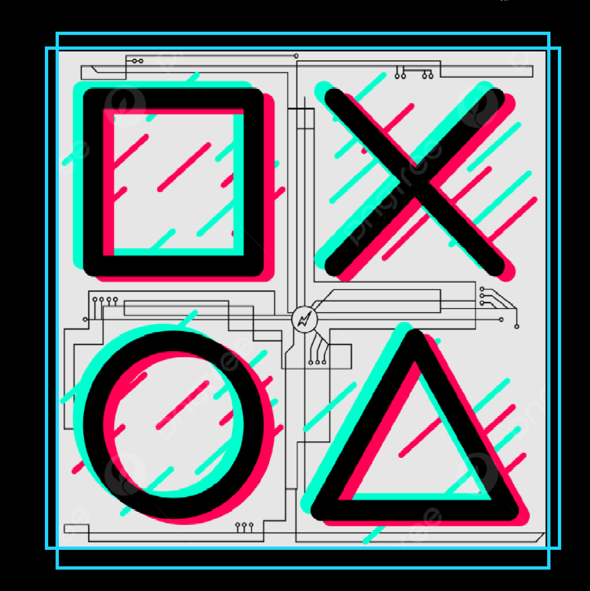
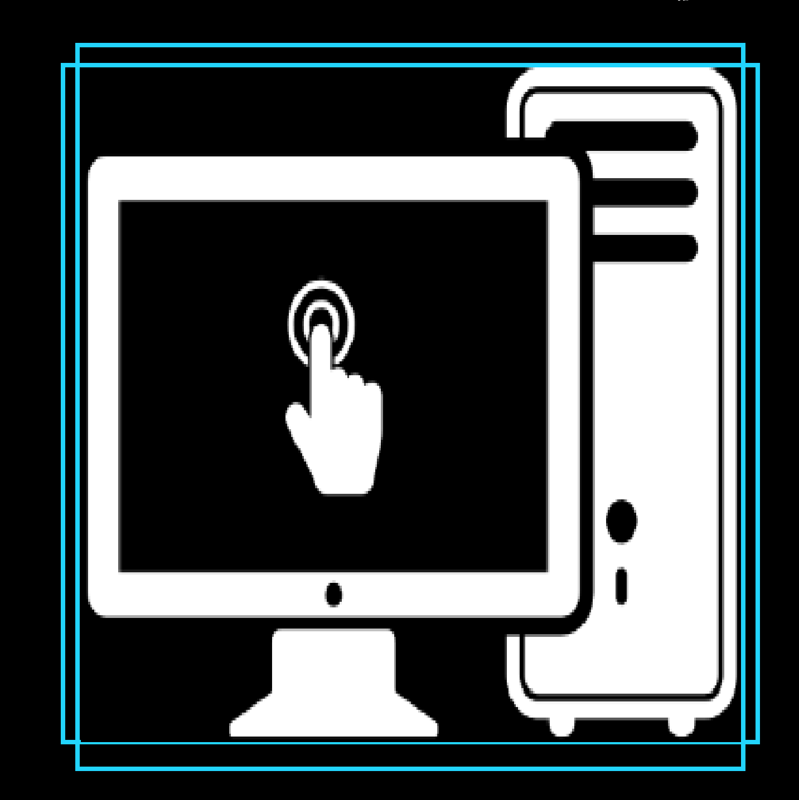

Algumas curiosidades sobre mim:
Tenho 26 anos, sou carioca! Sim, carioca da gema. Tenho sangue nos olhos para vencer meus medos e novos desafios. Sou apaixonado por música e tecnologia. Amo uma rodinha de samba, mas também sou muito caseiro.
Sou o tipico nerd amante dos jogos. Mas amo estar entre meus amigos e minha familia. Vejo na area de tecnologia, novas possibilidades e um vasto mundo para conhecer.
Desde pequeno sempre sonhei em trabalhar com computador e usava uma calculadora como se fosse um pc, aquelas bem antigas (risos). Toco meu violão e jogo meus jogos favoritos, sou muito curioso e amo aprender coisas novas.


